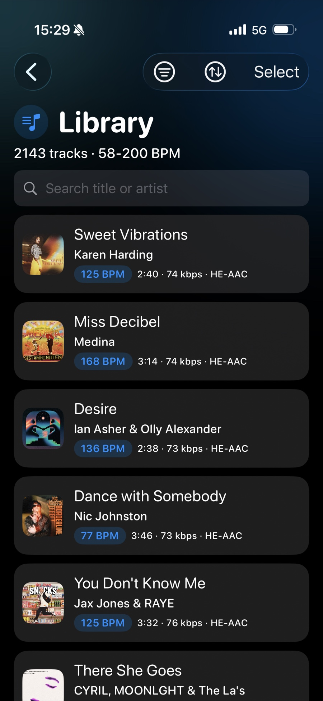
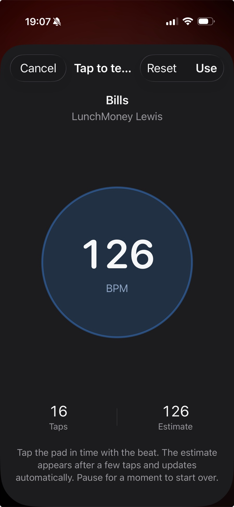
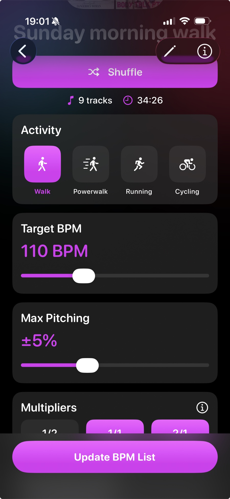
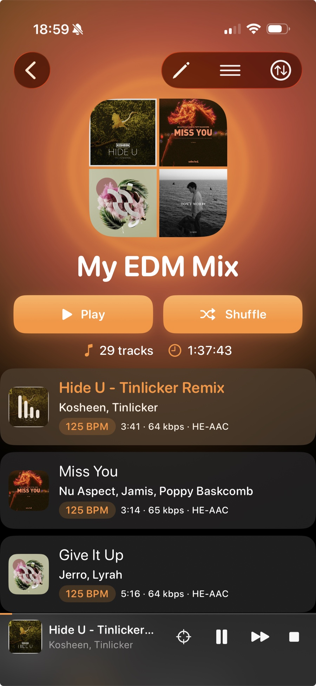
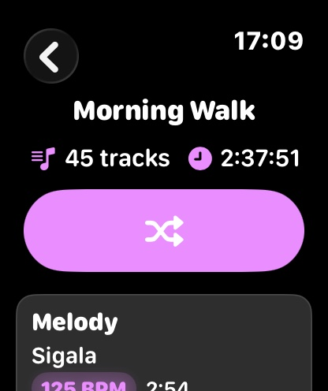
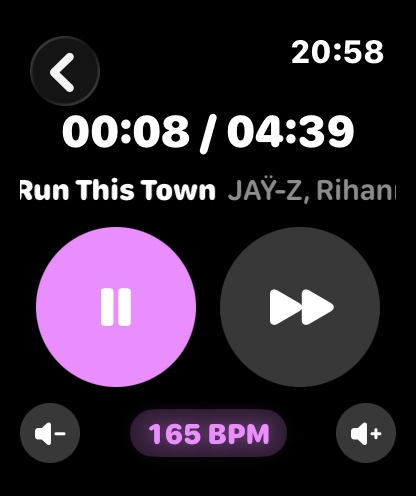
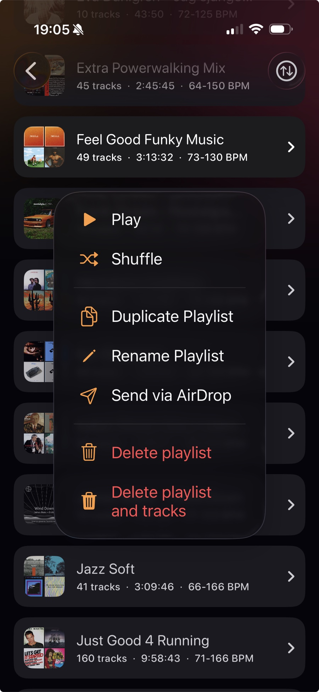

Run2Beat
Your music. Your workout. In sync.
You spent years collecting that music. Now put it to work. Run2Beat imports the audio files you already own, learns the tempo of every track, and shapes playlists around the rhythm of your run, ride or powerwalk.
And when you’re not training, the same app plays your library back the way it deserves — Shazam-tagged, properly EQ’d, volume-balanced and smoothly crossfaded.
Free · Ad-free · Works fully offline
Build your library

Bring your
own music.
Import your own audio files (MP3, AAC and other common formats) from iCloud, your phone, or an external drive. Run2Beat recognises every file so the same track is never imported twice — only unique files end up in your Library.
Missing a title or cover art? Run2Beat can identify tracks via Shazam and fetch the right metadata automatically.
Plan on a few seconds per song. The import keeps running safely with the screen locked, so a couple of hundred tracks is the work of a single coffee — bring it back to a ready library.
Know the tempo

Every track,
its true tempo.
Run2Beat uses a learned beat-tracker (Core ML, running entirely on your device) to find the tempo of every imported track. A classical DSP pipeline acts as a fallback when the model is uncertain — and any track that needed the fallback is automatically flagged as low-confidence so you can review and correct it before your next session.
Always in control of the beat.
How BPM analysis works →Two ways to play
BPM lists & standard playlists.
Run2Beat treats both kinds of playlists as first-class citizens — because a workout and an evening walk aren’t the same thing.

For workouts
BPM lists.
A BPM list is a saved recipe. You decide a target step cadence, how much music the list should hold and where the songs come from — Library or one or more standard playlists. Run2Beat then picks matching tracks at random and plays them back tempo-matched to your stride in real time.
Three knobs shape the result:
- Target BPM — your step cadence. Many runners aim for 170–180; a brisk power-walk often lands around 130.
- Max pitching — how far Run2Beat may digitally shift a song’s tempo to meet your target. Under 5 % is usually unnoticeable; higher values qualify more songs from your library at the cost of making vocals sound less natural.
- Multipliers — decide how your feet land on the beat. 1/1 matches songs close to the target. 2/1 matches songs at roughly half (two steps per beat). 1/2 matches songs at roughly double (one step every two beats). Songs always play near their natural tempo — only the beat you step on changes.
When you sync a BPM list to your Apple Watch, your music files are BPM-adjusted up front. No live processing on the watch, no distorted vocals.
How BPM lists work →
For everyday listening
Standard playlists.
Want to listen without BPM constraints? Build classic playlists from any of your imported music — for the commute, the dog walk, the kitchen, or just because.
Same library. Same audio quality. No tempo required.
Sound quality
Make it sound
the way you want.
Three small touches that quietly disappear once you press play.
Volume normalisation
Stop reaching for the volume control. Run2Beat measures every track’s loudness in LUFS — the same standard Apple Music and Spotify use — and adjusts playback so old recordings and modern masters sound equally loud, with built-in clipping protection that keeps the loud moments clean.
Learn more →Equalizer
Shape the sound with ten sliders spanning 32 Hz to 16 kHz at ±12 dB. Save named presets per pair of headphones — your “AirPods”, your “Bass boost”, your “Car” — and switch between them with one tap. Every preset syncs automatically to Apple Watch, so you can change profile from the wrist.
Learn more →Crossfade
The next track begins just before the current one ends, fading down as the incoming one fades up, so the rhythm of your run stays intact. Pick a fade length from 2 to 8 seconds, or turn it off for gapless playback. It only kicks in on automatic track changes — skipping ahead always starts instantly.
Learn more →Take it anywhere


Leave the
phone at home.
Sync BPM lists and standard playlists to your Apple Watch and run with just AirPods — full standalone playback, no iPhone required. Transfer happens over Bluetooth from the iPhone’s Sync screen; iPhone and Watch must both be active when you start, but afterwards both screens can be off. Only changes are re-transferred, so the more you sync the faster it gets.
Crossfade, EQ presets and volume normalisation all come along for the ride.
How sync works →In the car
Plug in. Press play.
Run2Beat shows up in Apple CarPlay with three driving-safe tabs — BPM lists, Playlists and Equalizer. Tap a BPM list to shuffle it, tap any playlist to start playback, or switch EQ preset at the next red light. The favourite button on the Now Playing screen stays in sync with the iPhone and the Watch.
Setup, presets and EQ stay on the iPhone — the car just plays.

Share the
whole playlist.
Found the perfect workout flow? Send a whole playlist — pre-analyzed audio and Shazam metadata included — to a friend via AirDrop. They get the music, the order, and the tempo. Ready to play.
Everything that matters.
Nothing that doesn’t.
A short tour of what’s actually inside Run2Beat.
MP3, M4A and WAV via the Files app, AirDrop or the in-app picker.
Tempo is detected on device. No cloud lookup, no upload — results cached locally.
Identify untagged tracks and fill in title and artist with a single tap.
Pick a target step cadence, a max-pitch tolerance and a 1/1, 2/1 or 1/2 multiplier — Run2Beat tempo-matches each song to your stride without distorting vocals.
Build the regular kind too — by mood, artist or a favourite session.
Ten sliders from 32 Hz to 16 kHz, ±12 dB. Save a preset per pair of headphones; presets also sync to Apple Watch.
Evens out loudness between tracks so quiet songs never disappear in the mix.
Smooth transitions between tracks. Set the fade length to taste — or turn it off.
Sync a BPM list to the Watch and run with just AirPods — iPhone stays home.
Send a whole playlist — audio files, BPM, artwork and play order — to another Run2Beat user. They import it as a fresh playlist on their iPhone.
Get Run2Beat
Free. Forever.
Offline.
Run2Beat is free, ad-free and works fully offline. Your music files and BPM data stay on your device — nothing ever leaves your iPhone. No subscription. No account.
Download on the App StoreYou bring the music. We bring the tempo.